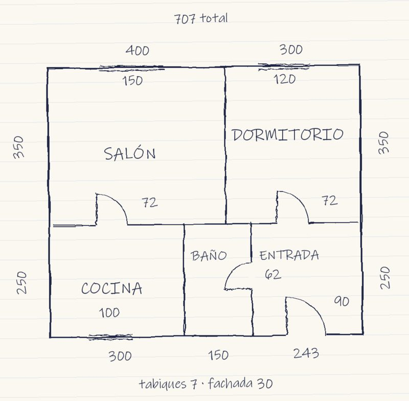
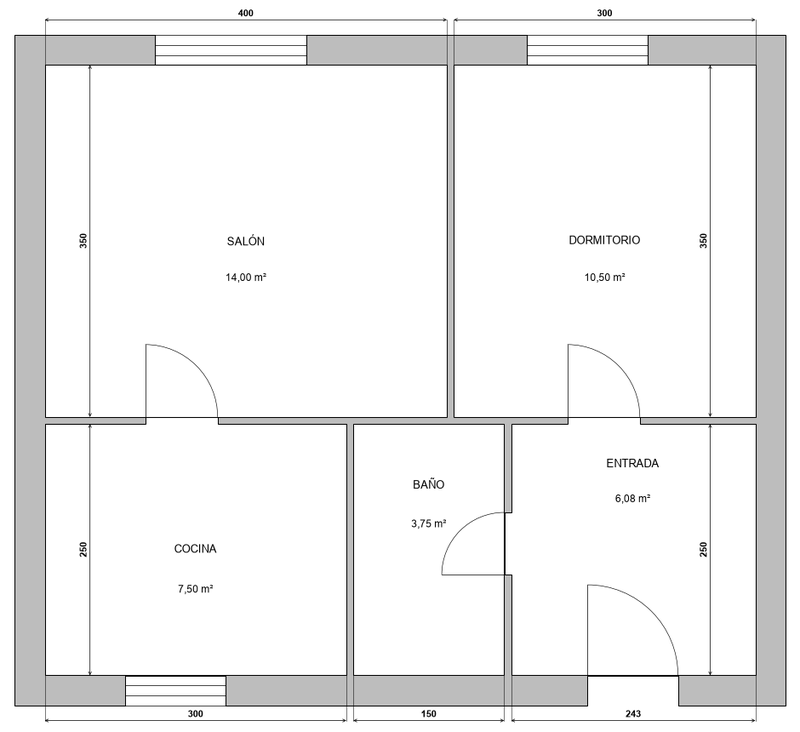

Hi, I'm Eduardo. I'm 20, I study marketing, and I've been using AI chatbots since they first came out. Most of my time outside class goes into AutonomIA, and some of it into the hardcore Minecraft server I run for my friends.
He's a property appraiser, and before AutonomIA existed I used to watch him spend hours at his laptop looking for comparables, writing reports that were mostly the last report again and typing whatever clients sent him into spreadsheets. I kept telling him half of that could be automated. It took ages before he agreed to pay for a subscription, and then I started automating his tasks one by one. After a while he was the one asking for a bigger plan with more credits, and I still look after his setup. Later I started doing the same for other appraisers.
AutonomIA sets up AI for property appraisers, loss adjusters and building surveyors, and it has paying clients. Three appraisers use it every week. It has a Windows app, which you can get from the Microsoft Store.
For one appraiser, the assistant takes the sketch he draws during a visit and turns it into a plan to scale in PDF and DXF. It also gets a first version of his valuation onto one sheet, in the order he types it into his software, and he goes over it before he uses it.


The everyday stuff is cadastre records, a warning when the floor area on the land registry note doesn't match the cadastre, comparables put into Excel with a link and a date each, and report drafts in Word. So far it has handled a bit over 400 requests.
My own work runs on a team of AI agents on a PC at home, with one of them splitting up whatever I ask and passing the pieces to the others. The annoying part was memory. Agents forget what you asked once a chat gets long, so everything I ask goes on a list with my exact words and doesn't get ticked off until someone has checked the result against what I said, and nothing goes out to another person until I say yes.
Day one is setting up the environment: the skills their work needs, access to their files and programs, their main workflows written down, and a way for all of it to get better as they use it. Comparables go to an agent, while copying a client's details from an email into a spreadsheet gets a plain script, because there's no point paying an agent for that every day. By the next morning they should be using a couple of things already.